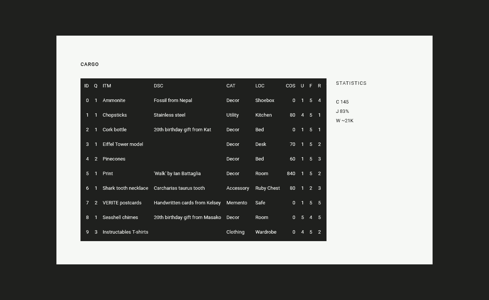
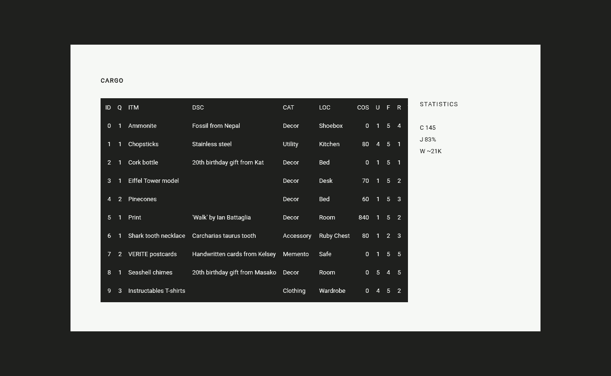

Cargo is an upcoming personal inventory management tool.
System
- Utility: How often is an item used
- Functionality: How useful is an item
- Rarity: How rare is an item
- Worth: How much an item is worth
2T1CJ2 2.5 2.0D 0.5V
Cargo is an upcoming personal inventory management tool.
